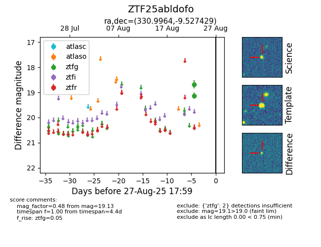

Target ZTF25abldofo at 2025-08-27 17:59, see:
FINK: fink-portal.org/ZTF25abldofo
Lasair: lasair-ztf.lsst.ac.uk/objects/ZTF25abldofo
ALeRCE: alerce.online/object/ZTF25abldofo
alt names
ZTF25abldofo (ztf,fink)
coordinates:
equatorial (ra, dec) = (330.9964,-9.52743)
galactic (l, b) = (48.8413,-46.81457)
photometry
last ztfg=19.13
2 ztfg detections
